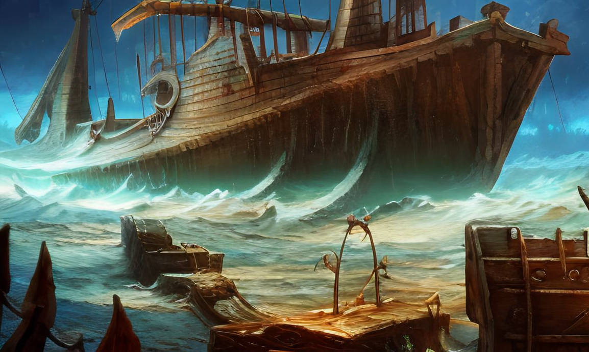

Shipwreck Survivor Stories: Tales from the Tempest
In a dramatic turn of events, survivors of the recent shipwreck that brought Alonso, Antonio, and Gonzalo to the island have come forward with harrowing tales of survival. The tempestuous storm that marooned the crew and passengers on the mysterious island has left an indelible mark on their lives.
Alonso, the King of Naples, recounts the terrifying moment the ship was engulfed by the storm. "It was as if the sea itself rose up in anger," he said. "We were at the mercy of the elements, and I feared for the lives of everyone on board."
Antonio, Alonso’s brother, described the chaos that ensued as the ship began to break apart. "People were being tossed overboard like rag dolls," he recalled. "It was every man for himself."
Gonzalo, a loyal counselor to Alonso, managed to stay afloat by clinging to debris. "I held on for dear life, praying that we would find land," he said. "When we finally washed ashore, it felt like a miracle."
In an exclusive interview, we spoke with one of the survivors who described the experience. "The storm came out of nowhere," said the survivor. "One minute we were sailing smoothly, and the next we were fighting for our lives. It’s a miracle that we all survived."
Despite the initial shock and despair, the survivors have banded together, finding strength in each other as they navigate the challenges of their new environment.
Miranda and Ferdinand: A Love Story Amidst the Tempest
In the midst of chaos and uncertainty on the island, a heartwarming love story has emerged between Miranda, the daughter of the exiled Duke Prospero, and Ferdinand, the son of Alonso, King of Naples. The two young lovers have found solace and joy in each other’s company, a beacon of hope against the backdrop of their turbulent surroundings.
Miranda, who has lived on the island in isolation with her father, expressed her excitement about meeting Ferdinand. "I have never seen a man like him before," she said, her eyes sparkling. "He is brave, kind, and everything I have ever dreamed of."
Ferdinand, equally smitten, spoke about his admiration for Miranda. "She is the most beautiful and gentle soul I have ever encountered," he said. "Meeting her has been the greatest blessing in this time of hardship."
Their romance has blossomed quickly, with Prospero, Miranda’s father, observing their growing bond. "I have watched them closely," he said. "Their love is pure and true. It brings me great joy to see my daughter so happy."
As they look towards the future, Miranda and Ferdinand are hopeful that their love will endure beyond the island. "We dream of a life together, free from the shadows of the past," said Ferdinand. "No matter what challenges come our way, I know we will face them together."